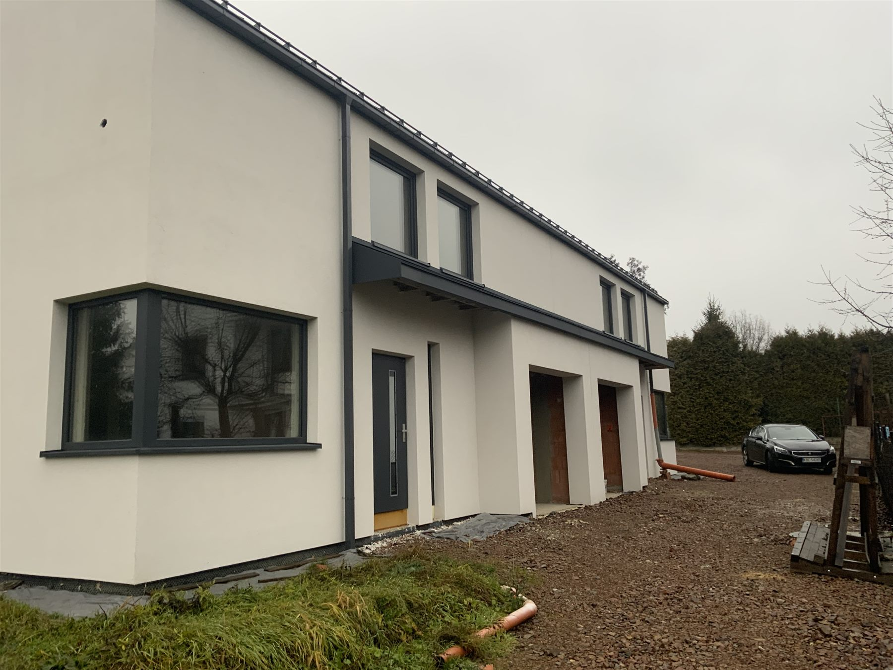
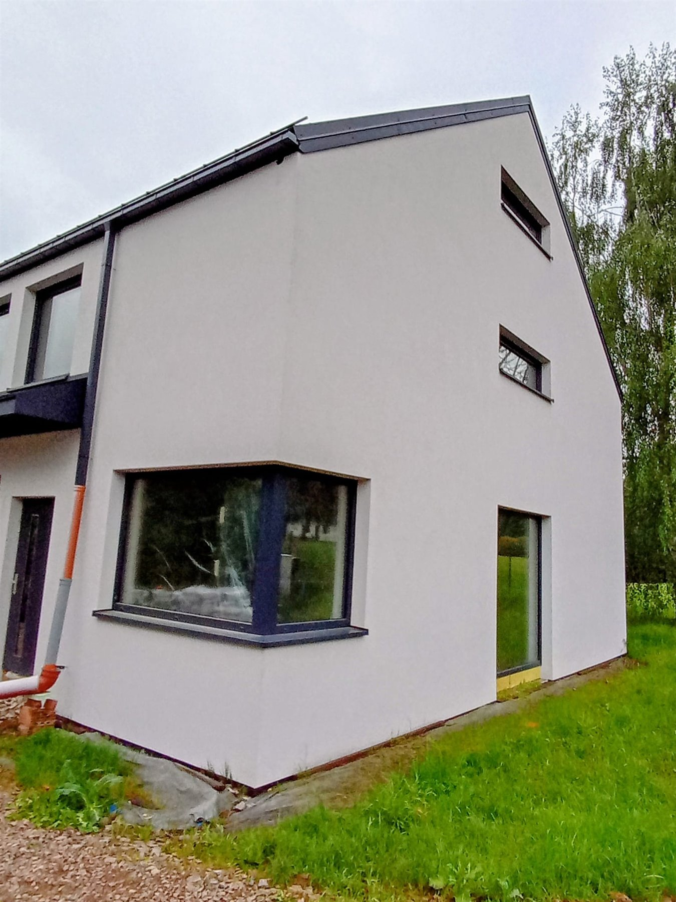
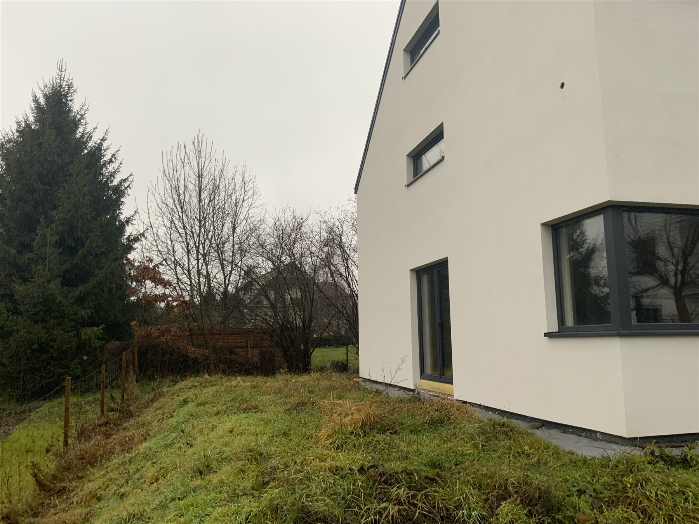
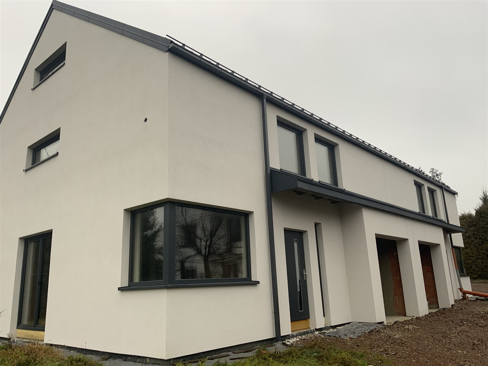
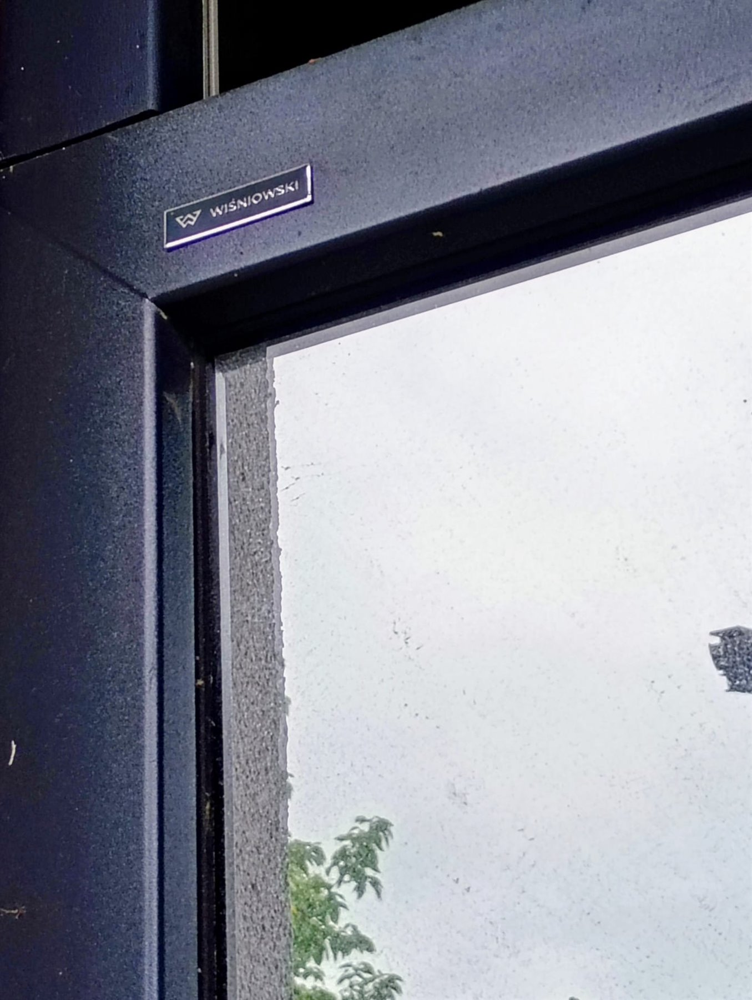
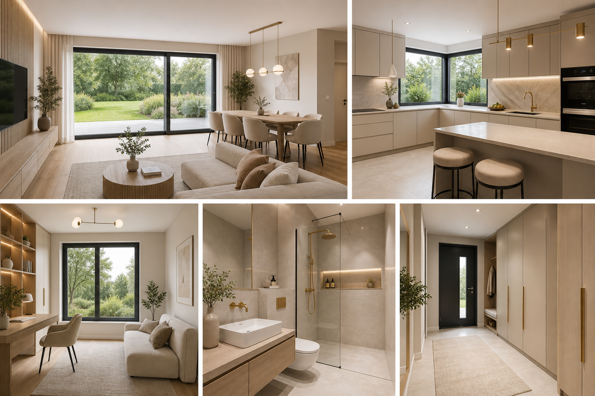
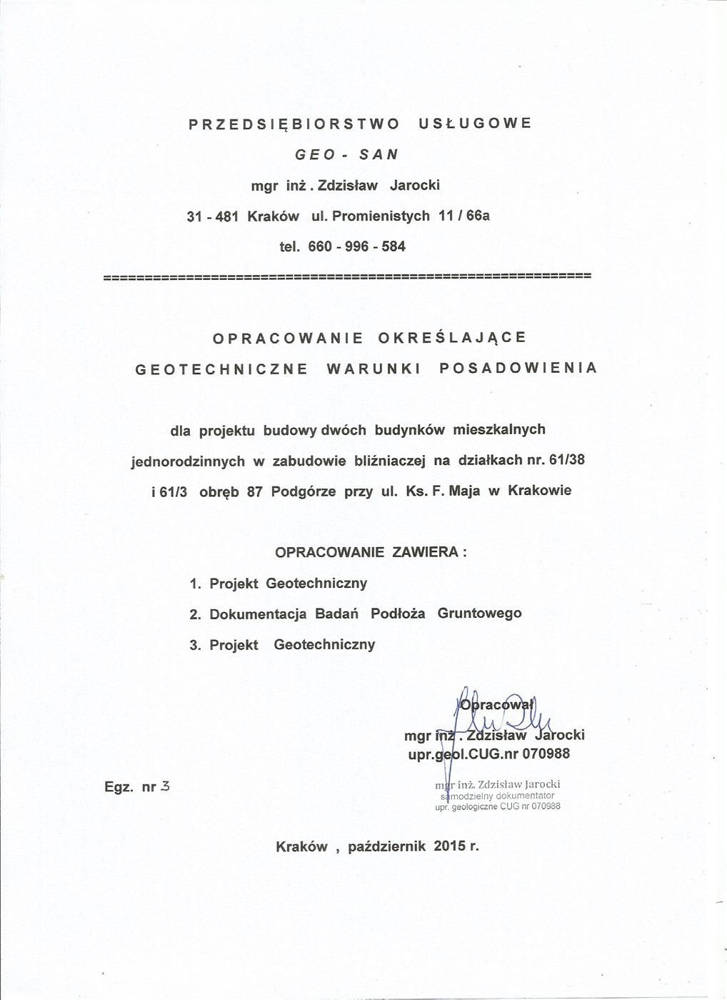
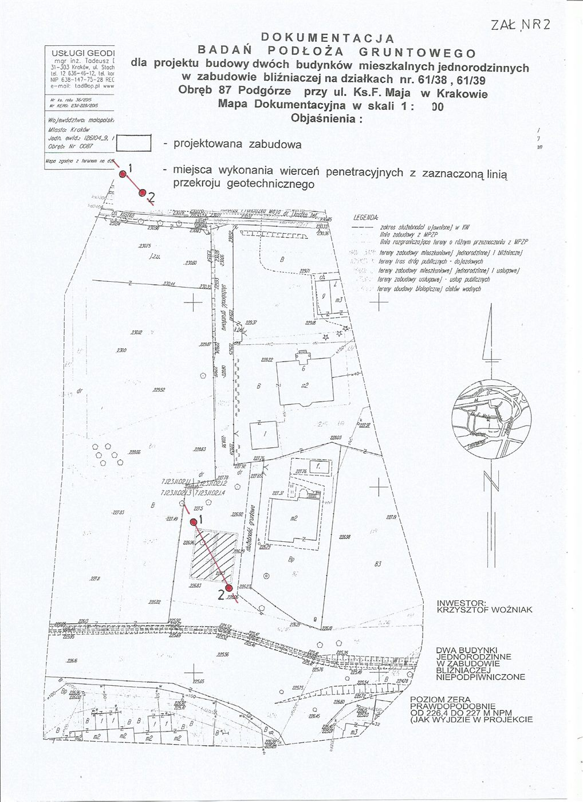
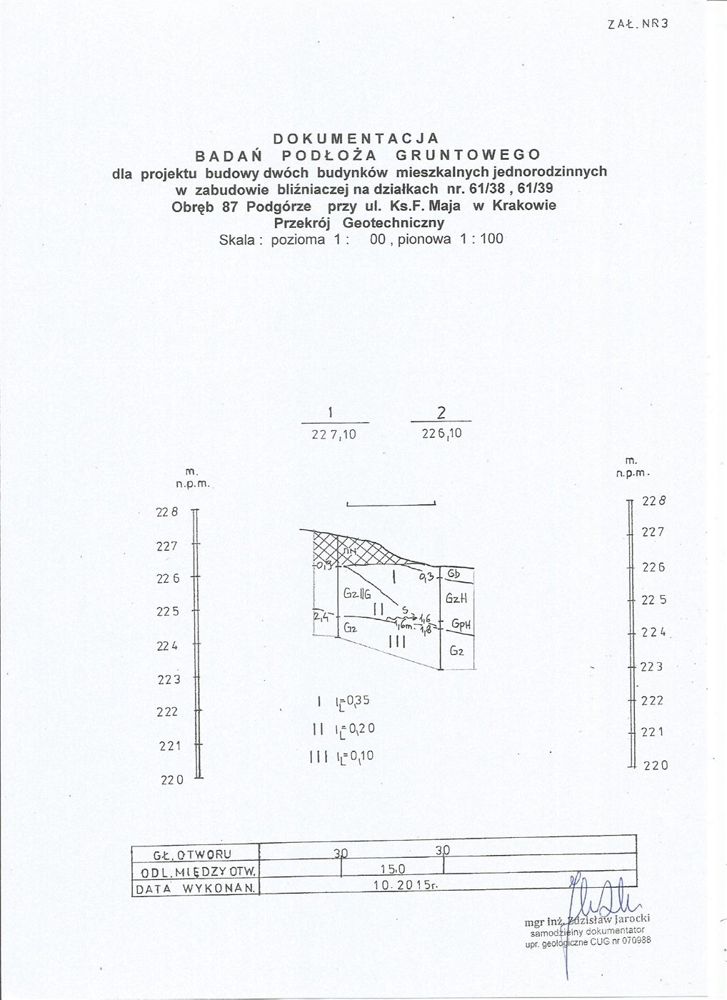
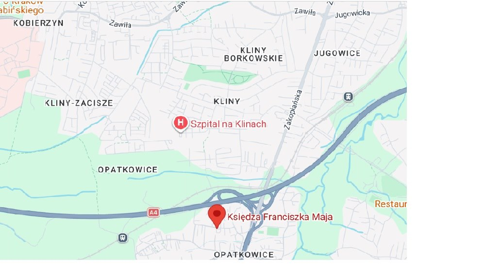

Kraków Opatkowice · ul. ks. F. Maja
Wyjątkowy bliźniak premium w zielonych Opatkowicach.
Dom z panoramicznymi przeszkleniami, aż 6 pokojami, ogrodem i garażem w bryle. Nowoczesna architektura, rekuperacja, stolarka Wiśniowski i elastyczny układ tworzą propozycję dla osób, które chcą komfortu, prestiżu i bliskości natury bez rezygnowania ze sprawnego dojazdu do miasta.
Galeria
Nowoczesna bryła, zieleń za oknem i przestrzeń na własne wykończenie.
Zdjęcia pokazują elewację, duże przeszklenia, wejście, garaż oraz ogród. Dom jest świetną bazą do stworzenia eleganckiej, jasnej przestrzeni rodzinnej, w której salon płynnie łączy się z zielenią za oknem.
Nowoczesna elewacja i zieleń
 Elewacja od strony ogrodu
Elewacja od strony ogrodu
 Widok z wnętrza na ogród
Widok z wnętrza na ogród
 Budynek od strony wejść
Budynek od strony wejść Front segmentu
Front segmentu
Dojazd i garaże
Narożnik domu z ogrodem Zielona część działki
Zielona część działki Boczna część domu i ogród
Boczna część domu i ogród
Elewacja boczna
Nowoczesna bryła
Detal stolarki okiennejCharakter domu
Dom, który daje więcej niż cztery ściany.
W prestiżowej, zielonej i spokojnej części Krakowa czeka nieruchomość, która łączy nowoczesną architekturę z bardzo dużym potencjałem aranżacyjnym. To propozycja dla osób, które cenią komfort, jakość i prywatność, a jednocześnie chcą zostać blisko miejskiej infrastruktury.
Układ aż 6 pokoi pozwala wygodnie rozdzielić życie rodzinne, pracę z domu i strefę prywatną. Duże przeszklenia wpuszczają światło do wnętrz, a ogród staje się naturalnym przedłużeniem części dziennej.
To oferta bezpośrednia od właściciela. Dom jest w trakcie dalszych prac budowlanych i wykończeniowych, dlatego na tym etapie istnieje możliwość dopasowania aranżacji wnętrz do indywidualnych oczekiwań przyszłych mieszkańców.
Podstawowe dane
- Typ bliźniak premium
- Pokoje aż 6
- Kondygnacje parter, piętro i poddasze
- Adres ul. ks. F. Maja
- Miasto Kraków
Atuty codzienne
- Salon z jadalnią ok. 37 m²
- Kuchnia ok. 11 m²
- Gabinet / pokój gościnny ok. 11 m²
- Sypialnie 4 x ok. 17 m²
- Garaż w bryle budynku
Standard
- Wentylacja rekuperacja
- Drzwi tarasowe HST bezprogowe
- Stolarka Wiśniowski
- Brama garażowa automatyczna
- Przeszklenia panoramiczne
Dla kogo
- Rodzina tak
- Praca z domu gabinet na parterze
- Goście / senior dodatkowy pokój
- Relaks ogród i salon kąpielowy
- Dojazd A4 i Zakopianka
Potencjał i układ
Aż 6 pokoi: część rodzinna, prywatna i miejsce do pracy.
Projekt domu zachwyca elastycznością. Parter skupia codzienne życie wokół salonu z jadalnią i ogrodu, a piętro oraz poddasze tworzą komfortową strefę prywatną z czterema sypialniami, salonem kąpielowym, antresolą i pralnią.
Parter
Strefa wejściowa, dzienna i garaż.
Imponujący salon z jadalnią o powierzchni ok. 37 m² łączy się z ogrodem przez bezprogowe drzwi HST. Na parterze jest też jasna kuchnia ok. 11 m² z narożnym przeszkleniem, dodatkowy pokój ok. 11 m², łazienka, wiatrołap i przejście do garażu.
Otwórz rzut parteruPiętro
Prywatna kondygnacja domowników.
Na górze przewidziano cztery ustawne sypialnie po ok. 17 m², przestronny salon kąpielowy z miejscem na wannę i prysznic, funkcjonalną antresolę oraz dedykowaną pralnię/suszarnię.
Otwórz rzut piętraPropozycja aranżacji wnętrz
Jasne beże, biel, złote detale i dużo światła z ogrodu.
Wizualizacja pokazuje spójną koncepcję dla najważniejszych pomieszczeń parteru: salonu z jadalnią i dużymi drzwiami HST, kuchni z narożnym przeszkleniem, gabinetu lub pokoju gościnnego, łazienki z prysznicem oraz przedpokoju z dużą zabudowaną szafą. Ponieważ dom pozostaje w trakcie prac, układ i wykończenie można jeszcze prowadzić w kierunku indywidualnych potrzeb.

Propozycja aranżacji wnętrz parteruStandard i technologia
Tu nie oszczędzano na rozwiązaniach, które czuć na co dzień.
Dom został zaprojektowany z myślą o wysokim komforcie, nowoczesnym stylu życia i niższych kosztach utrzymania. Kluczowe są światło, jakość stolarki, wentylacja mechaniczna i wygodne połączenie salonu z ogrodem.
Rekuperacja
Wentylacja mechaniczna z odzyskiem ciepła pomaga dbać o świeże powietrze i energooszczędność przez cały rok.
Panoramiczne HST
Bezprogowe drzwi tarasowe typu HST otwierają salon na ogród i wzmacniają poczucie przestrzeni.
Wiśniowski
Stolarka okienna i drzwiowa klasy premium buduje spójny, nowoczesny charakter elewacji.
Automatyczna brama
Garaż w bryle domu i automatyczna brama podnoszą komfort codziennego użytkowania oraz poczucie bezpieczeństwa.
Geotechnika
Dokumentacja podłoża przygotowana dla inwestycji przy ul. ks. F. Maja.
Opracowanie GEO-SAN z października 2015 r. dotyczy budowy dwóch budynków mieszkalnych jednorodzinnych w zabudowie bliźniaczej na działkach 61/38 i 61/39, obręb 87 Podgórze. Poniżej pokazujemy najważniejsze informacje w formie sprzedażowego skrótu oraz skany źródłowe.
Warunki gruntowe
Dokumentacja wskazuje proste warunki gruntowe i zaliczenie inwestycji do drugiej kategorii geotechnicznej.
Posadowienie
Projektowane posadowienie opisano na ławach fundamentowych na głębokości około 1,5 m poniżej poziomu terenu.
Ukształtowanie terenu
Teren opisano jako północny skłon wyniesienia Góry Borkowskiej, z rzędnymi około 226,10-227,10 m n.p.m.
Woda i odwodnienie
W dokumentacji nie przewidziano oddziaływania wód gruntowych na obiekt ani odwadniania wykopów podczas prac ziemnych.

Strona tytułowa geotechniki Wnioski geotechniczne
Wnioski geotechniczne

Mapa dokumentacyjna
Przekrój geotechnicznyMapa poglądowa
Położenie przy ul. ks. Franciszka Maja, blisko A4 i Zakopianki.
Dodana mapa dobrze pokazuje kontekst: Opatkowice, sąsiedztwo Klinów, szybki dostęp do Zakopianki i węzła autostrady A4 oraz spokojniejsze, zielone otoczenie na południu miasta.

Mapa poglądowa lokalizacjiLokalizacja
Opatkowice: cisza, zieleń i pełna infrastruktura pod ręką.
Dom znajduje się w sercu dynamicznie rozwijających się Opatkowic, urokliwej dzielnicy na południowych obrzeżach Krakowa. W bezpośrednim sąsiedztwie są szkoła podstawowa, przystanek komunikacji miejskiej i codzienne udogodnienia, a szybki wyjazd na A4 i Zakopiankę ułatwia dojazd do centrum oraz poza miasto.
Opatkowice
Podgórze
ul. ks. F. Maja
A4
Zakopianka
szkoła podstawowa
komunikacja miejska
ogród
garaż
Prezentacja domu
Najlepiej zobaczyć bryłę, ogród i układ na miejscu.
Umów prezentację, sprawdź panoramę przeszkleń, przejście salonu do ogrodu, układ 6 pokoi, garaż i standard rozwiązań technicznych. Sprzedaż odbywa się bezpośrednio od właściciela, bez pośredników.